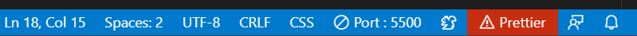
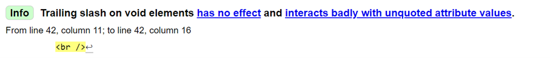

Å teste kode for error og tilgjengelig er en viktig del av koding. Derfor har vi testet koden vår jevnt gjennom skriveprosessen, med hjelp av flere forskjellige tester. Ikke kun for feil, men også for universell design som passer alle.
Morsomt nok er den mest brukte testen, selv om den er noe skjult, utvidelsen “Prettier”. Flere av oss i gruppen bruker denne utvidelsen for å gjøre koden automatisk mer oversiktlig og ryddig ved lagring. Denne utvidelsen fungerer imidlertid ikke hvis det er en feil i koden. Dette kan lett sees, som vist på bildet nedenfor, hvor “Prettier”-knappen blir rød. Når man klikker på den, viser den hvor feilen er og hva som er feil, som deretter er lett for å oss å fikse.
En ulempe med “Prettier”-testen er at den ikke sier noe om koden som helhet, kun små feil. Derfor brukte vi også et annet digitalt nettverktøy: nettstedet https://validator.w3.org/. Selv om den noen ganger plukker opp mindre viktige punkter, som bildet nedenfor, hvor det er et mellomrom inne i tag’en, som utvidelsen “Prettier” automatisk legger til), gir det en veldig grundig og klar oversikt over hvordan koden ser ut - både med “Info” som er mindre viktig, og “Errors” eller “Warnings” avhengig av feilen.
Vi brukte også nettsiden https://wave.webaim.org/, for å sjekke kontrastbroblemer, og andre error i koden til slutt. Dette var en fin måte å dobbeltsjekke at alt i koden var som det skulle.
Uansett har vi ikke støtt på noen store problemer i koden vår, sikkert mye på grunn av at vi denne gangen har fokusert mer på å ha en tydelig og oversiktlig kode som er lett å lese (f.eks. med kommentarer i koden, oppdeling, o.l.).
En annen test vi utførte på nettsiden var en fargeblindhetstest. Vi brukte "Let's get color blind" chrome extension. Dette var for å teste hvordan nettsiden ville ha sett ut dersom man er forskjellige type fargeblind, og vi kunne fremdeles se alle bilder og lese teksten.
En siste ting vi har gjort er at flere i gruppen har brukt og kodet i forskjellige nettlesere for å se at alt fungerer likt på tvers av ulike browsere (Chrome, Firefox, Microsoft Edge, etc.), samt forskjellige enheter (Windows, Mac, etc.), og skjermstørrelser. På denne måten ble det enklere å gjøre nettsiden tilgjengelig for alle. Noe som leder oss til det siste punktet.
Det disse tidligere testene derimot ikke sier noe om er universell utforming. Derfor har vi også bedt personer som ikke er kjent med koding, om å teste nettsiden vår, f.eks. familie og venner, for å se hva de synes. Dette gjorde det lettere for oss å se ting vi kanskje ikke hadde tenkt på selv, og gjøre forbedringer ut fra det. I tillegg sammenlignet vi og fikk design ideer fra forskjellige nettsteder for restauranter og lignende.